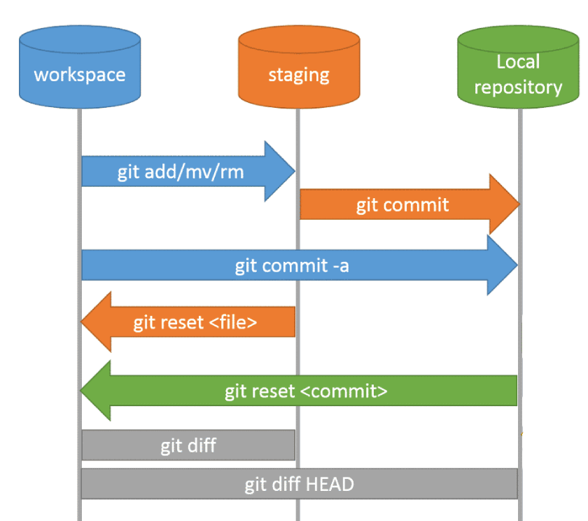

¿Qué resuelve?
Permite saber qué ha cambiado, comparar versiones y recuperar una anterior si es necesario.
1 · Git local · WIP
Registra la evolución de un proyecto antes de compartirlo en Internet.
Un control de versiones registra los cambios de los archivos a lo largo del tiempo. En lloc de
crear carpetes com projecte_final2, Git conserva versiones identificables del mismo
projecte.
Permite saber qué ha cambiado, comparar versiones y recuperar una anterior si es necesario.
Es una instantánea con autor, fecha y mensaje; representa un cambio pequeño y coherente.
Git funciona en tu ordenador sin conexión. GitHub llegará después.

Windows: git-scm.com. macOS: executa
git --version i acepta las herramientas si las solicita. Ubuntu/Debian:
sudo apt install git.
git --version
# Comprueba que Git está instalado.
git config --global user.name "Nom Cognom"
# Define la autoría de los commits.
git config --global user.email "correu@exemple.com"
# Define el correu de la autoría.El directori de treball és on edites; staging selecciona els canvis del proper commit; el repositori desa l'historial.
cd ruta/de/la/carpeta
# Entra en la carpeta donde está perfil.md.
git init
# Crea el repositorio local.
git status
# Muestra los archivos nuevos o modificados.
git add perfil.md
# Prepara perfil.md per al commit.
git commit -m "Crea el perfil en Markdown"
# Guarda la primera versión.git status
# Revisa el estado antes de trabajar.
git diff
# Muestra cambios todavía no preparados.
git add perfil.md
# Selecciona el cambio.
git commit -m "Añade taula de tecnologies"
# Crea una nueva versión coherente.
git log --oneline
# Muestra el historial resumido.
git show
# Muestra el detalle del último commit.Ejercicio práctico
perfil.mdperfil.md en una carpeta nueva y ejecuta git init.Crea el perfil en Markdown.git log --oneline: has de veure tres versiones con mensajes claros.chuleta-git.md, i comença-hi a recollir les
instruccions de Git importants que aprenguis. Añade-lo al repositori i crea un quart commit.
Termina con git status: el resultado esperado es nothing to commit, working tree
clean.